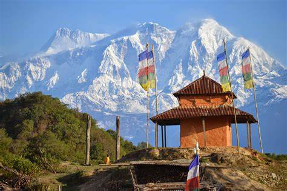
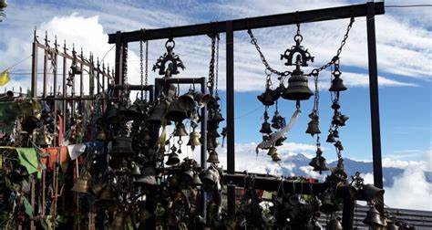
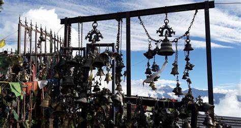
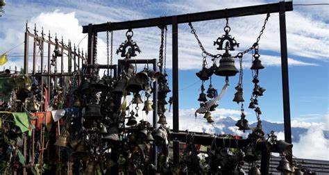

Most Traveled places

 


wether in lamjung in January, the same as December, is another fresh winter month in Lamjung, Nepal, with temperature in the range of an average low of 1.4°C (34.5°F) and an average high of 11.8°C (53.2°F). January is the coldest month, with an average high-temperature of 11.8°C (53.2°F) and an average low-temperature of 1.4°C (34.5°F).
Mustang is known for its trekking tours and mountain sightseeing. Elevated at an altitude of 3840 kilometres, this city is divided into two parts: Lower and Upper Mustang. Even though it is relatively unexplored, this city is a great destination for those who want to immerse in Tibetan culture as well as in Nepalese lifestyle as it is located near the Tibetan Plateau
visiting to Kalinchowk is frequent all the time in a year but during the winter season, it gets crowded. Kalinchowk travel guide will be helpful to you for planning your holiday to kuri village.